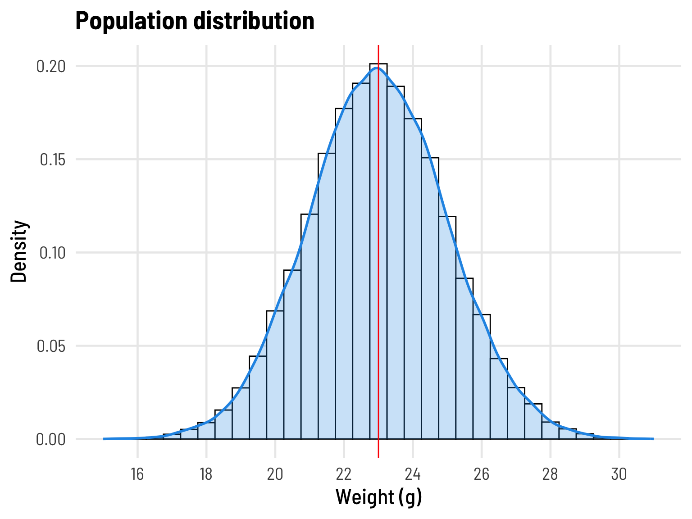
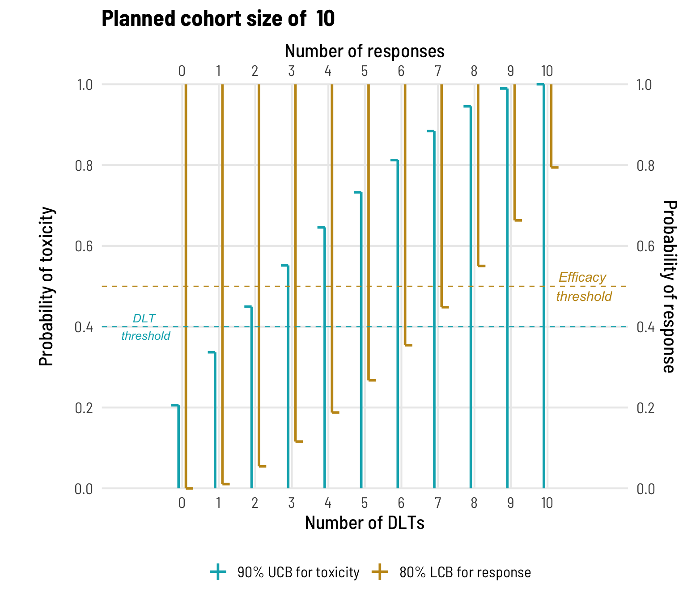

Overview
The sample size in research projects is often limited by practical constraints e.g. cost of equipment, logistics of animal breeding and management, or the (low) prevalence of patients with a particular condition. Group sizes of 3-10 are typical of many animal studies and laboratory experiments, and while small can mean different things to different researchers, we’re going to focus here on sample statistics and sampling variation as the same size in a project heads down into this territory.
Sample statistics and sampling variation
To study a population of interest, data is gathered from a representative sample and then summaries statistics such as the sample median, mean, standard deviation or a proportion are derived to characterise that sample. These sample statistics vary about the (true unknown) population parameter for which they provide an estimate, and we can calculate confidence intervals to go along with these estimates to give context to a plausible range for the population parameters.
The smaller the sample size:
- the larger the distance between the estimate (statistic we have derived) and the (true unknown) population parameter is likely to be, and
- the wider the confidence interval.
This distance and width speaks to sampling error.
Consider the following example that demonstrates how sampling variation increases with decreasing sample sizes.
Example: Samples of mice
Figure 1
Here, we simulate data to represent a “population” of healthy female C57BL/6J mice who are expected to have a mean weight of 23 grams, with a standard deviation of 2 grams, at 14 weeks of age The Jackson Laboratory.
In practice researchers would only have data on a sample (subset) of a (usually hypothetical) population, from which to calculate summary statistics as estimates of general population characteristics. There is a potentially obvious, but perhaps nuanced, point here that needs to be stated, and that is that we do not know the population parameter we are estimating - if we did, we would not be trying to estimate it.
In practice researchers would only have data on a sample (subset) of a (usually hypothetical) population, from which to calculate summary statistics as estimates of general population characteristics. There is a potentially obviously and perhaps nuanced point here that needs to be stated, and that is that we do not know the population parameter we are estimating - if we did, we would not be trying to estimate it.
As may be expected, for larger datasets the calculated summary statistic is more likely to be closer to the (true unknown) population parameter from which the sample was drawn. Let’s see how the calculated mean might be expected to vary from sample to sample for our mouse weight example.
To understand this variability, we’ll start by randomly drawing 500 samples that are each of size n=50.
Figure 2
a) The first 5 samples (of 500) with a sample size of 50, from a simulated population with mean=23 and std dev=2.
b) The distribution of the sample means calculated from each of the 500 draws.
Note
The mean of the sample means takes a value of 23.00, the same value, to 2 decimal places, as the (in this instance, because we set it, known) parameter for the population from which the sample was drawn.
The spread (in Fig 2b) appears much reduced, but that is because it is not the spread of individual observations - it is the spread of sample means. In fact, the standard deviation of the sample means (i.e. the standard error of the mean) is 0.3, in line with the expected reduction of the population standard deviation of 2 by a factor of \(1/\sqrt{n}\).
The spread (in Fig 2b) appears much reduced, but that is because it is not the spread of individual observations - it is the spread of sample means.In fact, the standard deviation of the sample means (i.e. the standard error of the mean) is 0.3, in line with the expected reduction of the population standard deviation of 2 by a factor of \(1/\sqrt{n}\).
Now let’s see what happens as the sample size decreases.
Here, a sample of n=20.
Figure 3
a) The first 5 samples (of 500) with a sample size of 20, from a simulated population with mean=23 and std dev=2.
b) The distribution of the sample means calculated from each of the 500 draws.
This spread here (in Fig 3b) does not look too different to that seen above (in Fig 2b).
And here, a sample of n=5.
Figure 4
a) The first 5 samples (of 500) with a sample size of 5, from a simulated population with mean=23 and std dev=2.
b) The distribution of the sample means calculated from each of the 500 draws.
It is clear that as the sample size decreases the estimates of the population mean become progressively more variable. This increased variability is taken into account in the formula for calculating the 95% confidence interval which becomes accordingly wider as precision decreases:
Figure 5
Random samples of increasing size, annotated with means and 95% confidence intervals.
Comparative studies with small group sizes
Expanding on these observations, they highlight a major limitation of small-sample studies in that they lack power to detect anything other than large differences or large “effects”. This is because the sampling distribution of the test statistic needs to take account of the increased variability of the sample statistics on which the test procedure is based.
For comparisons of mean values (e.g. a t-test) a large effect translates to a large difference between group means relative to the within-group variation. Power (which relates to Type-II error) is an indication of the probability of a study to observe (or conclude) a difference if a difference (in the underlying populations being compared) truly exists.

Figure 6
Power plots for a 2-sample t-test, with alpha=0.05 and equal sample sizes, assuming equal variances.
Note
If n=5 for both groups, the minimum difference at which a 2-sample t-test has at least 80% power to detect is just over 2 standard deviations.
In line with the example above, if we were comparing weights of 2 treatment groups of mice, and it’s reasonable to assume a common SD of 2g, this would correspond to an absolute difference of 4g in the population mean weights - quite a large treatment effect.
At the design stage of an experiment, it is important to determine the minimum clinically meaningful difference/effect size you want to be able to detect, and power your study accordingly by including a sufficiently large sample.
For example, one could consider increasing power by extending the simple 2-sample approach to a factorial design, where the between treatment group differences are simultaneously examined across one or more factors (eg sex, age group).
Using confidence intervals to guide decision-making
Confidence intervals can be a little tricky to get your head around. They don’t provide a range in which XX% (typically 95%) of the data values lie, but rather relate to our belief regarding where the population parameter of interest (e.g. the true mean or proportion) lies.
Important
The “confidence” comes from sampling theory: Suppose we sample the same population many many times, and for each sample calculate a 95% confidence interval around the sample mean, we would expect that 95% of the time the constructed interval will capture the true population mean.
Sometimes, just by chance (or bad luck), our whole sample may lie towards one end (the tail) of the population distribution (see S-3 for n=5 in Fig 4a/Fig 5c above) resulting in a 95% CI that happens to “miss” the true value. The real problem here is that for our study - we don’t actually know if this has happened!. This is because, in practice, we only have a single sample and don’t know the true population parameter for the population from which the sample was drawn; hence, the level of confidence simply reflects a rather nominal degree of plausibility.
Example: Proportions
So, we know that for small sample sizes the calculated confidence intervals will be wide. This can be even more evident with proportions. Despite this, the upper and/or lower limits of these confidence intervals can still offer useful bounds in which to aid with decision making.
For example, consider patient recruitment to an early-phase clinical trial of a new drug that is under development. Recruitment may cease early if there is sufficient evidence of high toxicity or provisional efficacy - according to pre-defined criteria. Here, stopping rules based on one-sided binomial confidence intervals (think, proportions) can inform trial planning and implementation.
Say enrollment into a dose expansion cohort is planned, with an upper threshold of 40% for allowable dose limiting toxicity and treatment efficacy indicated if response rates are at least 50%. Assuming the planned cohort size is 10, Figure 7 presents 80% lower confidence bounds (LCBs) as a reference for response counts, and more conservative 90% upper confidence bounds (UCBs) for toxicity counts .

Figure 7
90% upper confidence bounds (UCBs, teal) for dose-limiting toxicity (DLT) and 80% lower confidence bounds (LCBs, ochre) for treatment response, for a sample size of 10. Bounds were constructed from one-sided binomial confidence intervals, using the Clopper-Pearson method.
The drug would be deemed to have an acceptable toxicity profile if no more than 1 subject was impacted by a dose-limiting toxicity (DLT). Given the small sample size, if there are 2 or more impacted subjects then the confidence interval for the true toxicity rate will be in excess of the 40% threshold, even though the observed rate may be no more than 20%. The stopping rule for unacceptable toxicity would be invoked if a second DLT occurs prior to the final enrollment.
Similarly, if treatment elicits an efficacious response in at least 8 patients, there would be reasonable confidence that the treatment has demonstrated sufficient efficacy to warrant continued investigation, and should this be established prior to enrolment of the complete cohort, the trial may be stopped early.
Confidence intervals for proportions are notoriously wide, and typically large sample sizes are sought to obtain a required level of precision for (around) the rate that is being estimated. If available resources are limited, it may be that a more efficient experimental could be considered.
Further thoughts
For small-sample studies, as with those based on larger samples, consider if the results can be appropriately generalised to fit with the aim of the study.
Population sampling: Consider if there are subtle biases resulting from recruitment strategies that may impact how representative the sample is of the population being characterized.
Laboratory experiments or animal studies: Ensure that environmental factors have been adequately controlled and appropriate randomization undertaken so that differences between groups can be confidently attributed to the condition/treatment under study. Small-sample experiments require tight control of between-individual variation to achieve maximum power and appropriate randomization must be undertaken for results to be valid.
Reproducibility Information
To access the .qmd (Quarto markdown) files as well as any R scripts or data that was used in this post, please visit our GitHub:
The session information can also be seen below.
R version 4.3.3 (2024-02-29)
Platform: aarch64-apple-darwin20 (64-bit)
Running under: macOS Sonoma 14.4.1
Matrix products: default
BLAS: /Library/Frameworks/R.framework/Versions/4.3-arm64/Resources/lib/libRblas.0.dylib
LAPACK: /Library/Frameworks/R.framework/Versions/4.3-arm64/Resources/lib/libRlapack.dylib; LAPACK version 3.11.0
locale:
[1] en_US.UTF-8/en_US.UTF-8/en_US.UTF-8/C/en_US.UTF-8/en_US.UTF-8
time zone: Australia/Perth
tzcode source: internal
attached base packages:
[1] stats graphics grDevices utils datasets methods base
other attached packages:
[1] DescTools_0.99.56 pwr_1.3-0 cowplot_1.1.3 ggpubr_0.6.0
[5] biometrics_1.2.4 lubridate_1.9.3 forcats_1.0.0 stringr_1.5.1
[9] dplyr_1.1.4 purrr_1.0.2 readr_2.1.5 tidyr_1.3.1
[13] tibble_3.2.1 ggplot2_3.5.1 tidyverse_2.0.0 extrafont_0.19
loaded via a namespace (and not attached):
[1] gld_2.6.6 readxl_1.4.3 rlang_1.1.4
[4] magrittr_2.0.3 snakecase_0.11.1 e1071_1.7-14
[7] compiler_4.3.3 systemfonts_1.1.0 vctrs_0.6.5
[10] httpcode_0.3.0 pkgconfig_2.0.3 crayon_1.5.3
[13] fastmap_1.2.0 backports_1.5.0 labeling_0.4.3
[16] utf8_1.2.4 promises_1.3.0 rmarkdown_2.28
[19] tzdb_0.4.0 haven_2.5.4 ragg_1.3.2
[22] xfun_0.47 labelled_2.13.0 jsonlite_1.8.8
[25] later_1.3.2 uuid_1.2-1 broom_1.0.6
[28] R6_2.5.1 stringi_1.8.4 car_3.1-2
[31] boot_1.3-30 extrafontdb_1.0 cellranger_1.1.0
[34] Rcpp_1.0.13 knitr_1.48 httpuv_1.6.15
[37] Matrix_1.6-5 igraph_2.0.3 timechange_0.3.0
[40] tidyselect_1.2.1 rstudioapi_0.16.0 abind_1.4-5
[43] yaml_2.3.10 curl_5.2.2 lattice_0.22-6
[46] shiny_1.9.1 withr_3.0.1 flextable_0.9.6
[49] askpass_1.2.0 evaluate_0.24.0 proxy_0.4-27
[52] zip_2.3.1 xml2_1.3.6 pillar_1.9.0
[55] carData_3.0-5 generics_0.1.3 hms_1.1.3
[58] rootSolve_1.8.2.4 munsell_0.5.1 scales_1.3.0
[61] xtable_1.8-4 class_7.3-22 glue_1.7.0
[64] janitor_2.2.0 gdtools_0.3.7 lmom_3.0
[67] tools_4.3.3 gfonts_0.2.0 data.table_1.16.0
[70] ggsignif_0.6.4 Exact_3.3 mvtnorm_1.2-6
[73] grid_4.3.3 Rttf2pt1_1.3.12 colorspace_2.1-1
[76] cli_3.6.3 kableExtra_1.4.0 textshaping_0.4.0
[79] officer_0.6.6 fontBitstreamVera_0.1.1 fansi_1.0.6
[82] expm_1.0-0 viridisLite_0.4.2 svglite_2.1.3
[85] gtable_0.3.5 rstatix_0.7.2 digest_0.6.37
[88] fontquiver_0.2.1 crul_1.5.0 farver_2.1.2
[91] htmlwidgets_1.6.4 htmltools_0.5.8.1 lifecycle_1.0.4
[94] httr_1.4.7 mime_0.12 fontLiberation_0.1.0
[97] openssl_2.2.1 MASS_7.3-60.0.1